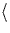
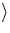
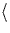
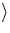

The O atom lay 0.934 Å away from the centre of the vacancy and
formed Si-O bonds of length 1.754 Å. The Si-O-Si angle is
138 . There are two short back Si-Si bonds (2.341 Å) and
one long one (2.51 Å). This is similar to the Ci defect in Si
[91], in that the 110 bonds in the Si-O-Si plane are
dilated, while the bonds above are compressed. The other pair of Si
atoms bordering the vacancy have a shared Si-Si bond length of
3.77 Å. The O atom is known to lie in a shallow 100
oriented potential valley, and so the precise bond angle is difficult
to calculate; however this is in sensible agreement with earlier
calculations which gave 149
. There are two short back Si-Si bonds (2.341 Å) and
one long one (2.51 Å). This is similar to the Ci defect in Si
[91], in that the 110 bonds in the Si-O-Si plane are
dilated, while the bonds above are compressed. The other pair of Si
atoms bordering the vacancy have a shared Si-Si bond length of
3.77 Å. The O atom is known to lie in a shallow 100
oriented potential valley, and so the precise bond angle is difficult
to calculate; however this is in sensible agreement with earlier
calculations which gave 149 [92] and
152
[92] and
152 [93].
[93].
There is an empty mid-gap level, consistent with the acceptor level seen experimentally at Ec - 0.17 eV. The LVMs are given in Table 5.1 and Fig. 5.1 shows the structure of the defect. The defect is very tensile and the Si atoms are pulled in from their ideal lattice sites to form either Si-O bonds or the reconstructed Si-Si bond. The highest mode at 787 cm-1 is an asymmetric stretch of the two Si-O bonds and is within 44 cm-1 of the observed mode. This is much lower than the stretch of bond centred Oi in agreement with the dilated bond lengths. It shifts 38 cm-1 with 18O in good agreement with the observed shift of 33 cm-1 [85]. This shows that the method gives isotopic shifts more accurately than the absolute frequencies.
In the last column of the table, one of the 28Si neighbours has been replaced by 29Si. This gives a shift of 1 cm-1: less than the 3 cm-1 width of the line [78]. Presumably the mode is broad because of anharmonic effects: the reorientation energy of the defect is only 0.38 eV.